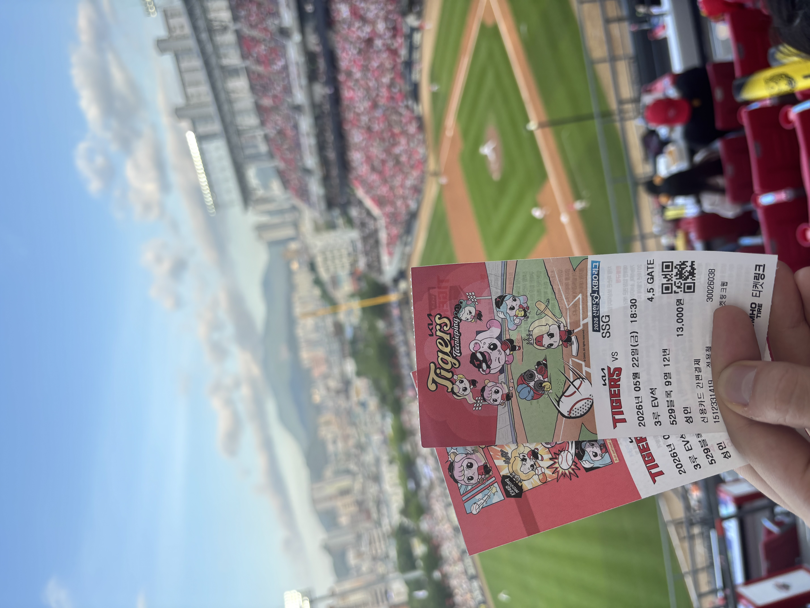
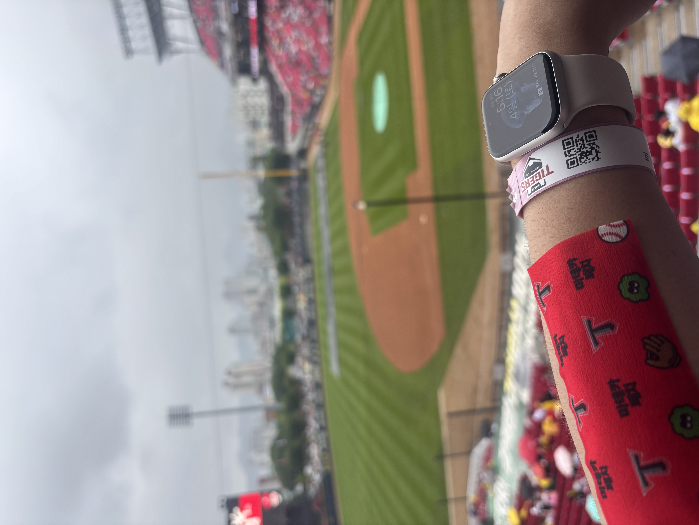
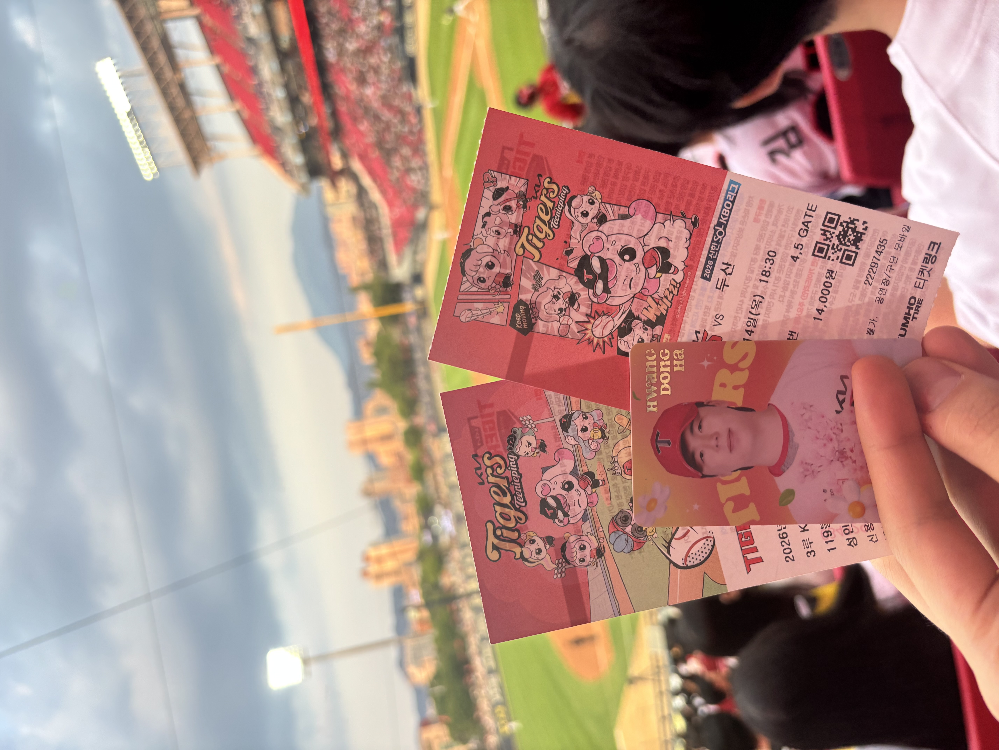

FAVORITE 01 · INFIELDER
05
김도영
만루 홈런과 멀티 홈런으로 특히 기억에 남은 선수. 최근 공식 경기에서도 3루수와 지명타자로 선발 출전하고 있다.
광주-기아 챔피언스 필드의 직관 기록과, 현재 KIA 타이거즈 선수들을 정리한 개인 아카이브입니다.
선수 정보 보기2026시즌 KIA 타이거즈의 공식 캐치프레이즈는 ‘다시, 뜨겁게’다. 홈 개막 시리즈의 ‘V13urn Again’은 13번째 우승을 향한 의지를 담았다. 이 페이지는 챔피언스 필드에서 남긴 직관 기록과 선수 정보를 함께 모은 공간이다.
만루 홈런과 멀티 홈런으로 특히 기억에 남은 선수. 최근 공식 경기에서도 3루수와 지명타자로 선발 출전하고 있다.
KIA 선발 로테이션을 이끄는 좌완 투수. 마운드에서 경기를 풀어가는 모습 때문에 꾸준히 응원하는 선수다.
최근 공식 경기에서 좌익수와 우익수로 선발 출전했다. 앞으로의 활약을 계속 지켜보고 싶은 외야수다.
한 번의 스윙으로 야구장의 분위기가 완전히 뒤집히던 순간.
오늘은 정말 다르다는 확신이 들었던, 홈런 두 방의 짜릿함.
상대 선수의 대단한 타격까지 현장에서 온전히 마주한 인상 깊은 경기.
 두산전, 티켓과 함께 남긴 기록
두산전, 티켓과 함께 남긴 기록
야구장을 향한 시선
응원 준비 완료
기억하고 싶은 한 경기 경기 시작 전의 설렘
경기 시작 전의 설렘경기 시작 전부터 즐거운 야구장만의 메뉴와 분위기. 관람의 시작을 완성한다.
수많은 사람과 같은 노래를 부르는 순간, 낯선 사람도 한 팀이 된다.
마지막 아웃카운트가 잡히는 순간의 환호. 그래서 다음 경기를 다시 기다린다.
버튼을 눌러 응원 문구를 확인하세요.